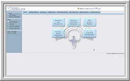
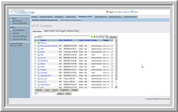
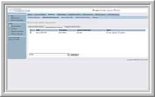
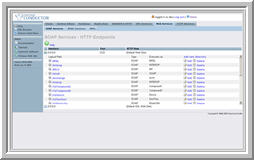
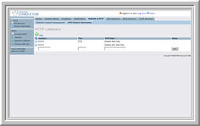
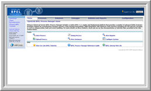
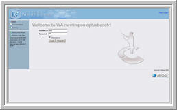
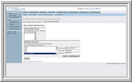
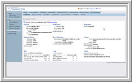

What's New in Virtuoso 4.5? |
|
|
Virtuoso 4.5, is the latest version of
OpenLink Software’s next-generation Universal Server Platform. Virtuoso facilitates the
development and deployment of a new generation of Enterprise-wide, Internet-,
Intranet-, and Extranet-based solutions. Virtuoso capabilities include handling
of Disparate Databases & Data Sources, Web Service Composition and Business
Process Integration and as well as Business Collaboration.
|
|
New Features
WebDAV Repository
| |
- WebDAV - Virtuoso 4.5 introduces an
entirely new
implementation of its WebDAV repository including, dynamic collections, file meta
data support, dynamic views of view of files organized by meta data and meta
data values.
- SmartDAV Folders - A SmartDAV
folder is a dynamic collection created in DAV whose contents are
determined at run time by automatically categorizing uploaded files or
resources based on a DAV Extension type (DET). Virtuoso DET support
provides a mechanism to create a new dynamic collection, based on its
own methods for reading or writing data.
- Metadata Extraction - Automatic
retrieval of metadata, so it is now possible to retrieve basic metadata
from resources (Support for metadata includes RSS < 1.0, RSS 1.0, RSS
2.0, Atom; Microsoft Office Document, vCard)
- Security Enhancements -
Additional ACLs and added security for SmartDAV Folder collections and
filter searches
- Interoperability - Virtuosos
WebDAV repository has undergone interoperability testing on a number of 3rd party WebDAV
Clients (Dreamweaver, InfoPath, Frontpage, and Microsoft Office).
- API Updates - Additional API
calls to allow fast integration and development.
 Visit
Virtuoso 4.5 online tutorials Visit
Virtuoso 4.5 online tutorials |
SQL Database Engine Enhancements
| |
- SQL Cost Model - Virtuoso 4.5
includes substantial improvement to the SQL cost model, yielding
dramatically better SQL optimization choices in certain cases.
- SQL Inverse Function - Virtuoso
introduces an SQL extension for creating functions that are inverses of each
other which include mapping data and foreign Key Relations: Example
dollar_to_euro and euro_to_dollar would be examples of inverse functions.
- Information Schema Views - The
INFORMATION_SCHEMA Views are system views that provide some information
about the system meta-data making it easier to query Virtuoso system tables.
Virtuoso 4.5 includes a number information schema vies based on the ISO
SQL92 standard to allow users more flexibility when developing SQL queries
across database engines and guarantee consistent results when using these
views instead of directly querying system tables which may change from
release to release.
- SQL Compiler Optimizations
- Improved support for indirect grants
in SYS_ROLE_GRANTS
- Improved handling the sub expression
matches in regular expressions
- Improved handling of negations in the
where clause of select Union statements
 Visit
Virtuoso 4.5 online tutorials Visit
Virtuoso 4.5 online tutorials |
XML Database
| |
- XML Parser -
Optimization and better error reporting in XML Parser.
- XQuery Functions
Updates - Support for XQuery Function fn:collection and
check our latest tutorial
 Visit
Virtuoso 4.5 online tutorials Visit
Virtuoso 4.5 online tutorials |
Web
Services | |
- BPEL4WS -
BPEL offers the
promise of reducing the cost and complexity associated with process
integration of
proprietary EAI and BPM solutions, which are expensive to develop, maintain,
and extend across diverse, heterogeneous environments.
Virtuoso
4.0 now supports BPEL for Web Services (BPEL4WS) and provides the deployment
and execution of business processes defined in BPEL 1.1 through the
OpenLink BPEL Process Manager.
Virtuosos BPEL implementation offers a seamless addition to Virtuoso's
database federation, XML and web services features. It builds on the
strength of having a local high performance relational data store for
process persistency and does not require any third party application server
infrastructure or databases.
- WS Interop -
WS-RM and WS-Security and BPEL4WS have gone through an
extensive interoperability by testing other vendor's implementations and
through active participation of WS-Interop forums.
 Visit
Virtuoso 4.5 online tutorials,
BPEL and
Web Services Interop Sites Visit
Virtuoso 4.5 online tutorials,
BPEL and
Web Services Interop Sites |
| |
- HTTP Server Settings
- New function for controlling the
lifetime of http threads, allowing on-going processing from clients
provided through the HTTP Server HTTP_IGNORE_DISCONNECT
that when set will cause it not to rollback the transaction on a
disconnect.
 Visit
Virtuoso 4.5 online tutorials Visit
Virtuoso 4.5 online tutorials |
Documentation| |
- Document Search - Advanced
search functionality has been added to Virtuoso documentation and
provides RSS gems (including Open Search API extensions) as well as
options for HTML or XML formatted results using Free Text, XPath,
and XQuery and search results including excerpts summaries of
document content.
 Visit
Virtuoso 4.5 online documentation server Visit
Virtuoso 4.5 online documentation server |
Data Access| |
- OpenLink Explorer - Virtuoso 4.5
introduces a new plug-in for Visual Studio .NET allows development of
Virtuoso-specific features within the familiar Visual Studio environment
providing users with ease of use and accelerated development cycles.
- Virtuoso tables and connections can
easily be dragged and dropped into MS Studio Projects, which makes
Virtuoso an convenient data source for Web or GUI target Microsoft .Net
development.
- Through OpenLink Explorer any
heterogeneous data sources linked to Virtuoso via its Virtual Database
capability are presented as if they were stored on a local Microsoft SQL
Server.
- Mac OS X Client Connectivity Kit -
Improved bundling and deployment for ODBC, JDBC, and NET providers
- Virtuoso ODBC 4.0 Driver - Improved
error messages and conformance with the ODBC error messages specifications.
|

Screenshot of Virtuoso 4.5
Conductor Image -
Click
to enlarge
|
Virtuoso Conductor
- The Virtuoso Conductor is a new Virtuoso VSPX
web-based administration and configuration tool, which provides
access to a number of database and server interfaces, being designed
to simplify, automate, and reduce the complexity of support and
administration of OpenLink's
Virtuoso Universal Server. This user-friendly interface allows
administrators to manage a number of Virtuoso servers’ features
including handling of Database Administration, SQL and XML storage,
Enterprise Data including disparate databases & data sources, Web
Service Composition, Business Process Integration, and Business
Collaboration. Features include:
|
Enterprise Data Management
 Screenshot of Virtuoso ISQL Image -
Click
to enlarge

Screenshot of WebDAV Image -
Click
to enlarge |
Database Administration
- Schema Objects Editor: Built-in
Schema Object Viewer (Tables, Views, and Stored Procedures) Create new
objects, enabling/disabling of foreign keys, constraints, and export
Schema DDL.
- ISQL Query Editor : Execute and
develop SQL queries. ISQL features provide syntax highlighting,
execution plans and a SQL builder which provides a Wizard to build
statements on the fly from database schemas. Using this interface you
can edit query results
and save them to a local file or Virtuoso WebDAV repository.
XML Data Management
- XQuery Editor - XQuery Editor
provides a graphical user interface for writing, testing and viewing
XQuery queries. Develop and store XQuery queries for reuse, saving time and
cost as well as storied results for reporting and transformation.
Web Content Management
- WebDAV and HTTP Administration
- WebDAV Object Filtering and Searching: Filter database objects by name
or text-search stored procedures and triggers for terms contained in
their definition.
|
Enterprise Information Integration

Screenshot of Linking External
DataSources Image
Click
to enlarge
Screenshot of SQL-XML Image
Click
to enlarge
|
Virtual Database Management
SQLX and SQL-XML Transformation
-
SQL-XML -
Execute and
define an XML template based on a SQL, SQL-XML or XPath Query or
apply a XQuery Mapping Schema. Through this interface you can
specify root elements that contain the resulting XML tree, a file
name and location of the XML Template. Options include saving the
query to WebDAV or provide an XSLT stylesheet. Behind the scenes
when you provide a stylesheet, it is used as the default
transformation for the XML and the template saved is executed
directly from WebDAV.
|
Web Services Platform

Screenshot of SOAP Services -
Click to enlarge

Screenshot of HTTP directories -
Click to enlarge
|
Web Service
Publishing
-
SOAP Services -
Web Service publishing interface simplifies Publish stored
procedures, User Defined Types, Queries and modules as web
services. Web Services can be invoked by any external
resource or in a Virtuoso SOAP defined Virtual directory by
simply clicking on a link.
-
WSDL Services - Using
the WSDL import interface you can use the description of
external web services to publish Web Services. Just provide a
URL to a WSDL description, and Virtuoso will automatically
provide a wrapper for the services available. The Web Services
can be tested through Virtuoso VSMX interface.
Web Application Server
|
Business Process Integration |
|

Screenshot of OpenLinks BPEL
Process Manager Image -
Click
to enlarge
|
OpenLinks BPEL
Process Manager
-
Robust BPEL Engine and Deployment Platform:
Virtuoso provides a fully featured native BPEL 1.1 engine
that supports the invocation and deployment of BPEL scripts
as well support for long-running and asynchronous business
processes.
-
Business Activity Monitoring:
Virtuoso BPEL4WS includes a web-based user Interface for
testing, debugging, and monitoring deployed business
process. T
-
WS-Reliable Messaging and Security:
Enterprises can now deploy business-critical transactions
over the Internet using the WS-Reliable Messaging (WS-RM)
specification. WS-RM support means that guaranteed
(at-most-once, at-least-once, and exactly once) messaging is
now possible over HTTP.
-
Database, XML and Web Service Integration:
Virtuoso's extensive virtual database, XML
and web services features provide for
intelligent transformation for
XML and non-XML applications and data. Virtuoso allows
integration of databases
into
Service-Oriented Architectures (SOAs), by automating the
creation of Web services from multiple tables in any ODBC,
JDBC or ADO. Net-compliant database.
BPEL
processes can directly invoke locally hosted Java or .Net
logic and access SQL data from resident in local and remote
tables.
-
Import and Execution of any Standards-Based
BPEL Business Processes:
Virtuoso BPEL4WS supports standards compliant BPEL 1.1
scripts so that industry Standard Compliant BPEL processes
can be developed in any of the BPEL modeling tools and
deployed on the Virtuoso platform.
-
Interoperability:
Virtuoso BPEL has gone through an extensive interoperability
testing against Microsoft, Oracle, and other vendor’s
implementations. Through thorough testing of these
processes, it validates the BPEL engine and ensures the
rapid orchestration of existing Web services
|
Enterprise Collaboration
|
|

Screenshot of OpenLinks Web
Applications Image -
Click
to enlarge
|
Virtuoso-Based Applications
- Virtuoso Web Applications -
Provide a Management framework for web-based application developed
using Virtuoso technology. This framework allows the customization
any number of applications from blogs to email, develop portals,
communities and create a point of presence on the web. The WA
application management tool allows you to configure applications and
perform various administrative tasks related to maintaining your
community including adding and removing applications, updating your
profile and community memberships.
Discussion, Mail and Proxy Services
- NNTP Services Administration
- Access USENET and Newsgroup postings and configure Newsgroups
associated with the Virtuoso News Server. Like Virtuoso's virtual
database. Through the NNTP interface, Virtuoso can "link" in
newsgroups from remote news servers.
|
New and Improved System Services |
|

Screenshot of Basic Replication
Image - Click
to enlarge

Screenshot of System Administration Dashboard
Image - Click
to enlarge
|
Replication and Synchronization
- Replication - Migrate,
replicate content and synchronize database and structures of any
Virtuoso or ODBC, JDBC or .Net compliant databases.
System Administration
- Dashboard - Providing a
summary of key server details including Database Information
Database License information, Locks, Database Size Total/Used/Free
Space, Backup / Maintenance Status, Database Files
(Logical/Physical) and other key Database Processes
- Simplified User Accounts
Manager: Create and map SQL, WebDAV and logins to appropriate
users in your databases.
- Event Scheduler: Create
Scheduled event quickly and easily with a simplified user interface
and receive notifications for failed events.
- Virtuoso Application Deployment
- Any Application can be developed with Virtuoso and packaged
using Virtuoso Application Packages or VAD for short. VADs
encapsulate all of the component necessary to package and deploy a
Virtuoso-based application. This includes schema objects,
directories, and content. Any VAD can be easily applied
through Package interface making software deployment a breeze.
- Database Backup: Schedule
and run full and incremental on-line server backups jobs in seconds.
|
Industry Standards Support
Runtimes & Frameworks
Microsoft .NET, Mono, J2EE
Web Services
SOAP, UDDI, WSDL, WS-Security, WS-Routing, WS-Reliable Messaging,
WS-Policy, WS-Trust, BPEL4WS
XML XPath,
XQuery, XSL-T, XML Schema
Web & Internet
WebDAV, HTTP, SMTP, LDAP, POP3
SQL Data Access
SQL-200n, SQLX, ODBC, JDBC, ADO.NET, and OLE-DB.
Links to Specifications
|
 Upgrade Now |
Upgrade Now |
 | |
 | |

Copyright 1998-2013 OpenLink Software. All Rights Reserved. |
|